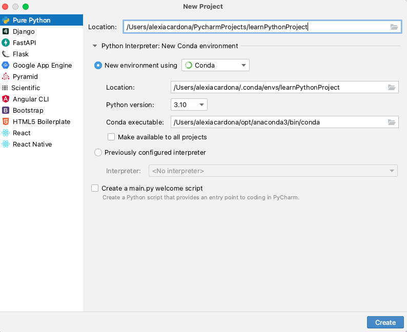
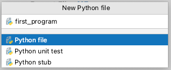
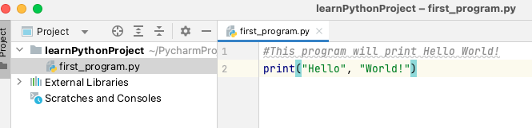
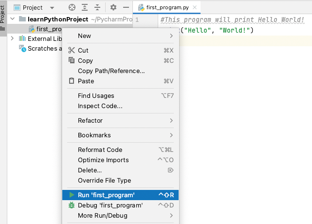
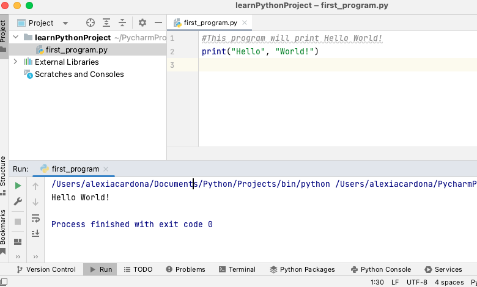
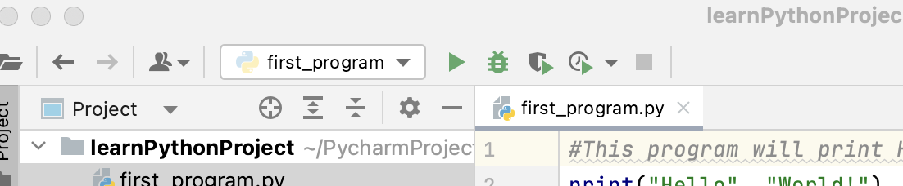
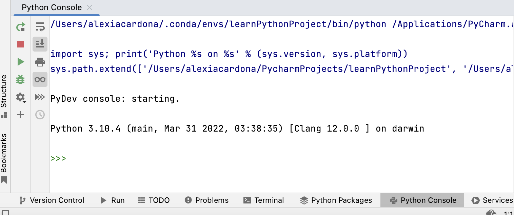

Introduction to Python Programming
Contents
Introduction to Python Programming#
What is Python?#
Python is a popular programming language 1, especially in the field of data science. Python was named after the “Monty Python’s Flying Circus” BBC show (not after the reptile!)2. The Python language has three very desirable features:
Python is an interpreted language; this means that it has an interpreter that runs the code line by line (rather than having to build the whole program before running it as in compiled languages for example).
Python is an Object-Oriented Programming (OOP) language, offering more structure and reusability for larger programs.
Python is a Very High-Level Language (VHLL); allows one to express complex operations in one statement.
Why learn Python?#
There are many good reasons why it is a good idea to choose to learn Python:
Easy to learn: Python is one of the easiest programming languages to learn as it is readable as its syntax is very similar to English.
Automate tasks: Instead of using a series of clicking and mouse operations, write your code in a file once and then just run it whenever you need it.
Promotes reproducibility: Once you have your code you can share it with your colleagues or publish it, so that others will be able to generate the same results as you have. Reproducibility is when others or yourself are able to generate the same results using the same data and analysis.
Support: As a widely used programming langauge, Python has a large community. There are lots of resources and help available online.
Free: Python is free to use.
Open source software
Cross-platform: Python runs on different operating systems.
Hopefully all this has convinced you that Python is a great programming language to learn. Before starting coding in Python, in the next section, we are going to introduce PyCharm, the tool that we will be using throughout the course to code Python in.
Introduction to PyCharm#
You can decide to write your code using a simple text editor and then use the Python interpreter directly through your command line to run your code. If you have used an IDE to develop code however, you will certainly not do that. An IDE(Integrated Development Environment) is a tool that enables programmers to write code productively by combining different tools and resources that are commonly used when writing code, into one application. In this course, we are going to use PyCharm as a tool to help us code in Python. There are several other popular tools used to code Python. We will be using PyCharm as it is one of the most popular tools used to develop Python code (the top one according to the Python Software Foundation survey). It is a tool used not just in academia but also in industry by small to big companies.
Creating a Project in PyCharm#
Before writing code in Python, we need to create a project in PyCharm. A project allows you to keep track of the files and environment associated to your code.
PyCharm
In PyCharm’s Welcome screen, click New Project.
Choose Pure Python to create a Python project. Choose the location of the project in the Location field.
Name your projectlearnPythonProject.Choose Conda in the New environment using field as shown below. 
Now click the Create button to create the project.
Creating and running Python files#
We will start learning Python by writing the classic “Hello World!” program which is normally the first thing you learn in any classic programming textbook.
PyCharm
Select File|New|Python file from the menu.
Write the name of the Python file in the field provided (in this example we will be using the name
first_program).
PyCharm creates a source code pane to edit the file
first_program.py. Note: A python file has an extension of.py. Write the code below in thefirst_program.pyfile: Run the Python file
first_programin PyCharm by right-clicking on the file in the Project pane, and select Run ‘first_program’ from the menu. If you want to use the keyboard to run the code, use the shortcut shown next to the Run ‘first_program’ menu. For mac this is ^ Shift R buttons. The output of
first_program.pyis displayed in the Run tool window at the bottom of PyCharm’s screen. Select View|Toolbar to display the run/debug tool buttons on the top menu for easy access. 
Python programs are executed by the Python interpreter. Python starts executing each line of code in a file, starting
from the first one and progressing line by line to the very end of the file. Now let’s look at the code in
first_program.py. The first line is a comment.
Programming concept
Comments are non-executable line of code that are used to explain Python code. A comment starts a line of code with a # and continues till the end of that line.
The second line uses the print() function to output the text Hello World!.
To run a Python file outside PyCharm, in a command line, use the following code:
\(python\) \(<name\) \(of\) \(Python\) \(file>\)
# to run first_program.py use the code
python first_program.py
Python Console#
You can interact with the Python interpreter via the Python Console pane at the bottom of PyCharm’s screen (as shown below). 
The console displays >>> to indicate that it is expecting a command as an input. After writing the command, pressing
the <Enter> key will execute the command. The output of the command is then displayed in the console.
A good way to use the Python Console is to use it as a calculator. Below are some of the most used mathematical operations.
Operator/Function |
Description |
Example |
|---|---|---|
+ |
Addition |
1 + 2 returns 3 |
- |
Subtraction |
3 - 1 returns 2 |
* |
Multiplication |
3 * 4 returns 12 |
/ |
Division |
4/2 returns 2.0 |
// |
Floor division: returns the integer part of a division result (without the fraction part) |
5//3 returns 1 |
% |
Remainder |
5 % 2 returns 2 |
** |
to the power of |
3 ** 2 returns 9 |
|
x to the power of y (same as **) |
|
|
absolute value of x |
|
|
rounds x to n decimal places |
|
Python follows the traditional mathematical rules of precedence (BODMAS). You can find more about these rules here.
Exercise 1 (Arithmetic Operators)
Level:
a. Try the examples in Table 1 in the Python Console.
b. Calculate: \(8 + (10 + 4^3 + 2)\)